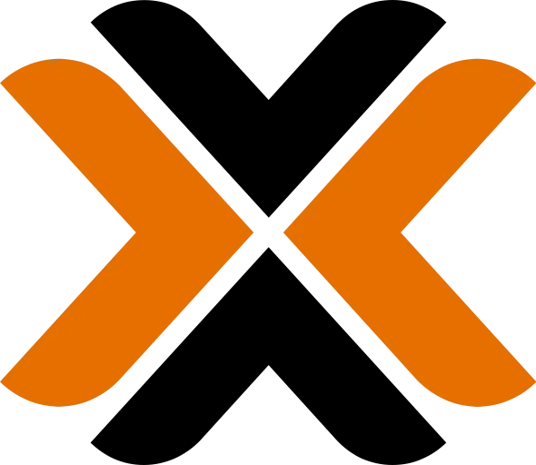
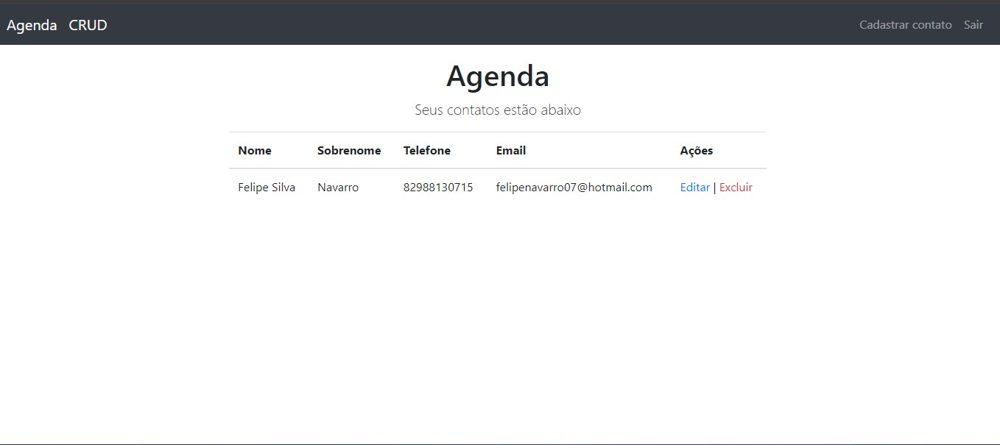

Projetos
Projetos técnicos focados em aprendizado prático, experimentação e construção de ambientes reais de infraestrutura.
 Destaque
Destaque

Ambiente Corporativo no ProxmoxAmbiente virtualizado completo montado do zero no Proxmox: Windows Server 2012, Active Directory, DHCP, DNS e GPO configurados como em um ambiente corporativo real. Um lab que vai além da teoria — tudo funcional e documentado.

Agenda — CRUD Completo
Aplicação de um CRUD feito em JS, utilizando MVC (Controllers, Models, Views) e verificação de dados no propio front-end, views feito em EJS para suportar códigos
Deploy feito com o google cloud plataform, e o proxy reverso do NGINX para subir para o subdominio do site
Projeto feito juntamente com o professor do curso de JS e baseado nos meus conhecimentos iniciais do curso.
Proteções usadas: CSRF e HTTPS

Pi-hole
Servidor DNS com Pi-hole implementado em máquina virtual no Proxmox para bloqueio de anúncios e rastreadores a nível de rede. O ambiente faz parte do meu homelab de infraestrutura, onde experimento virtualização, serviços de rede e monitoramento de tráfego. O projeto permite estudar controle DNS, listas de bloqueio, resolução de nomes e integração com a rede local.

PsyIA
Aplicação web de interface conversacional com IA voltada para apoio emocional e análise psicológica. A plataforma possui dois modos: um chat empático para conversas reflexivas e um modo profissional que gera análises clínicas estruturadas utilizando modelos LLM via API da Groq.
O projeto explora integração com inteligência artificial, arquitetura frontend sem backend e persistência de dados no navegador usando LocalStorage.

Automação de Instalação de VMs Windows
Automação da criação de máquinas virtuais Windows 11 no Proxmox utilizando Sysprep e arquivos Unattend. O projeto gera um template de VM já configurado, permitindo criar novas máquinas Windows instantaneamente através de clonagem.
A solução elimina o processo manual de instalação do sistema operacional, padroniza o ambiente e facilita futuras automações como entrada em domínio e aplicação de políticas de grupo (GPO).
Automação de Comandos com Aliases no Linux
Implementação de aliases no Linux para automatizar comandos recorrentes e otimizar o uso do terminal, reduzindo tarefas repetitivas do dia a dia.
O projeto também aborda funções shell e versionamento dos aliases, facilitando reutilização, portabilidade e padronização do ambiente.